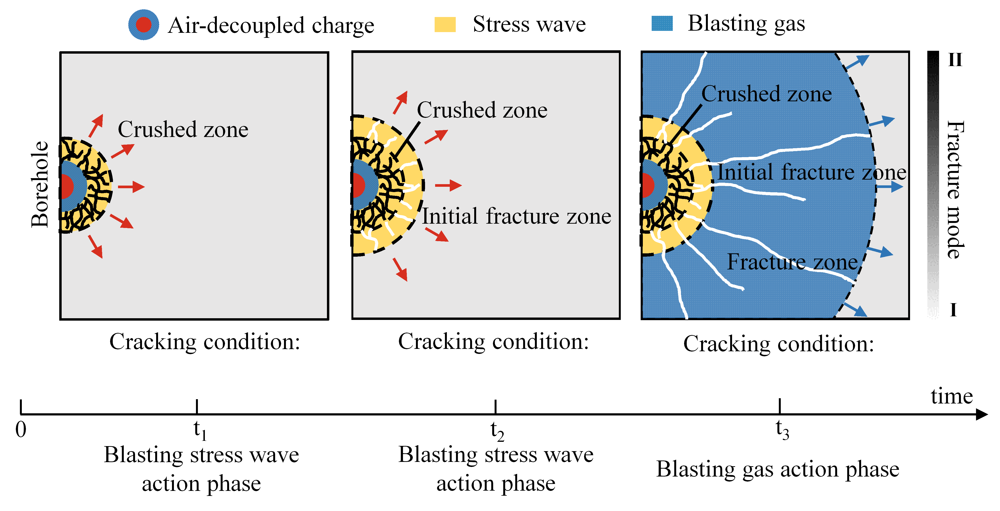
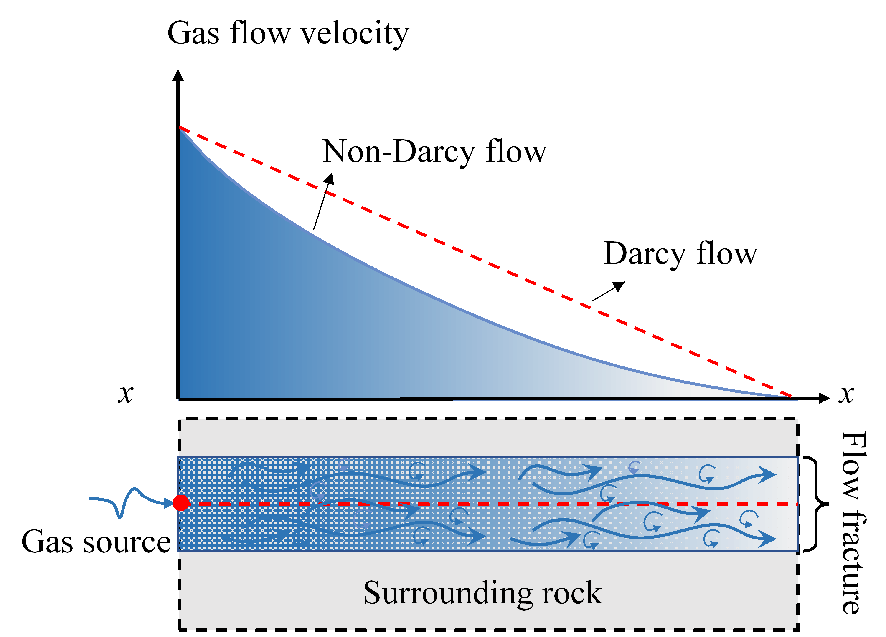
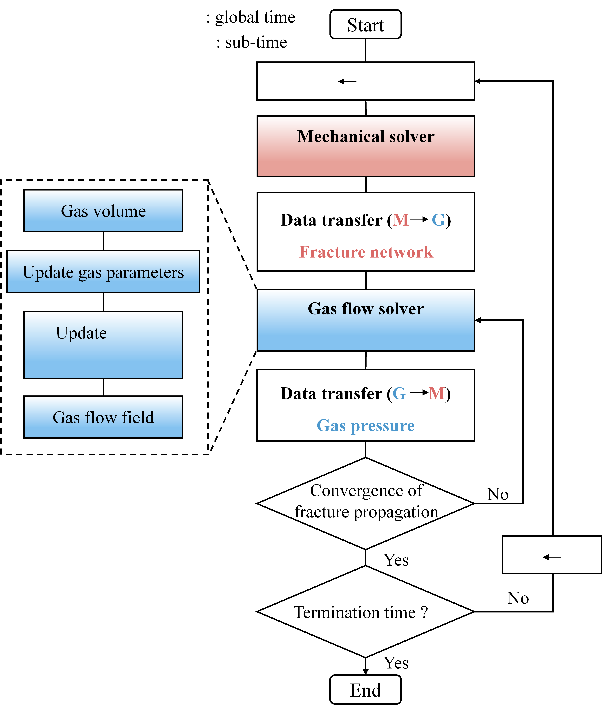

Gas Flow#
To reproduce the coupled fracturing behavior driven by blasting gas with high fidelity, OpenFDEM provides a compressible gas-solid coupling model based on FDEM. The blasting gas is assumed to obey the ideal gas equation of state. At each time step, the gas volume at different locations along the fractures is computed, allowing the gas density and bulk modulus to be updated. The gas pressure field is then transferred to the mechanical module to compute the fracture propagation at the next time step, and the updated fracture geometry is subsequently used for the next gas-flow calculation. The definition of the fracture aperture and volume is described in the Fracture Fluid section.
{kind=link}

Figure 1. Development of the blast-induced fracture network: from stress wave loading to gas-driven secondary fracture extension.#
Compressible gas flow model#
The velocity of blasting gas can reach the order of hundreds of meters per second, and the fracture aperture can be estimated to range from \(10^{-6}\) to \(10^{-4}\) m. The Reynolds number can then be calculated using
where \(\rho\) is the fluid density, \(v\) is the gas velocity, \(a\) is the fracture aperture, and \(\mu\) is the dynamic viscosity. The Reynolds number of blasting gas flowing through blast-induced fractures can be preliminarily estimated to range from approximately 10 to 1000. When \(\mathrm{Re}\) exceeds 1, inertial effects must be considered, meaning that the Forchheimer model should be adopted and the conventional Darcy flow model is no longer applicable.
The flow of blasting gas within rock fractures satisfies the principle of mass conservation
where \(\mathbf{q}_g\) is the gas velocity vector and \(\rho _g\) is the gas density. Integrating over any control volume \(V_i\) and its control boundary \(\varGamma _i\) yields
where \(\mathbf{n}\) is the unit vector normal to the boundary of the control volume.
For an ideal adiabatic compressible gas, the variation of density with time is pressure-dependent
where \(K_g\) is the bulk modulus of the gas. Combining the volume and boundary integral terms, the discrete pressure equation for the control volume \(V_i\) becomes
where \(Q_{i}^{total}\) is the total flow rate within the control volume, from which the gas pressure can be determined.
Because the velocity of blasting gas is relatively high, the pressure gradient term and the velocity term in Darcy’s law exhibit a nonlinear dependence. Forchheimer introduced an empirical constant \(\beta\) to account for this nonlinearity caused by inertial effects
where \(\mathrm{k}_i\) is the gas permeability coefficient, \(k_g\) is the gas permeability, and \(\beta\) characterizes the influence of the inertial effects. The parameter \(\beta\) is expressed as
where \(D_{\mathrm{h}}=2a\) is the hydraulic diameter, \(\xi\) is the peak penetration height, and \(\lambda\) and \(\eta\) are two empirical coefficients, taken as 0.022 and 2/3, respectively. Based on Eq. 6, the gas velocity between any fracture element node \(i\) in one cavity and its corresponding node \(j\) in an adjacent cavity can be expressed as
where \(\varDelta p_g\) is the gas pressure difference between cavity \(i\) and cavity \(j\), calculated from the previous time step, and \(L\) is the length of the fracture element.
{kind=link}

Figure 2. Non-Darcy gas flow: comparison of the gas flow velocity between the Forchheimer (non-Darcy) and Darcy models.#
Gas equation of state#
During the ideal adiabatic compressible gas flow, compressibility must be taken into account. Unlike liquids, which are nearly incompressible, the density of the gas changes significantly with pressure. Both density and bulk modulus vary with pressure. According to the equation of state for an ideal adiabatic gas, the gas density \(\rho _g\) and bulk modulus \(K_g\) are given by
where \(\rho _0\) is the initial gas density, \(p_g\) is the current gas pressure in the cavity, and \(\gamma\) is the adiabatic index of the gas. In this study, the adiabatic index of the blasting gas is approximated by that of air, \(\gamma=1.4\).
Gas-solid coupling#
Following the determination of gas pressures for all cavities within the computational domain, the gas pressure \(\sigma _g\) acting on each adjacent solid element is calculated. Defining the mass flow rate as \(m_t=q_g\left( x \right) \rho \left( x \right) A_e\), the flow equation can be written as
where \(p_{c,in}\) and \(\rho _{c,in}\) represent the gas pressure and density at the inlet cavity, respectively. Integrating this equation yields the gas pressure distribution along each fracture element
Once the pressure distribution along the parallel plate is obtained, the virtual work principle is applied to equivalently assign the pressure to the nodes of the fracture element, yielding the nodal force
where \(\mathbf{n}\) is the normal vector of the element surface subjected to the gas action, \(S_e\) is the area of that surface, and \(\mathbf{N}(x)\) is the shape function matrix of the element.
The gas-mechanical coupling is achieved by alternately advancing the time steps between the mechanical solver and the gas-pressure solver, realizing a fully bidirectional coupling. The mechanical solver computes the deformation, fracturing and interaction of the rock mass. The gas flow solver then captures the change in cavity volume caused by fracture propagation, elastic deformation and gas compressibility, recalculates the gas density and bulk modulus, and determines the gas pressure, which is applied back to the mechanical solver as an external load.
{kind=link}

Figure 3. Interaction between the mechanical solver and the gas flow solver.#
Critical time step of the coupling#
Both the mechanical and gas solvers employ an explicit time integration scheme. The critical time step of the mechanical solver, required to ensure numerical stability, can be estimated as
where \(h_{\min}\) is the minimum width of the solid element, \(\lambda\) and \(\mu\) are the Lamé constants, and \(\rho\) is the material density. The critical time step for the gas solver is given by
where \(k_{g,i}\) is the permeability, \(\mu _g\) is the dynamic viscosity of the fluid, and \(K_g\) is the gas bulk modulus. Because the critical time step for transient flow can be very restrictive, a sub-cycling strategy is adopted, in which each mechanical time-step loop contains multiple gas-calculation sub-cycles. After the gas flow solver completes the specified number of sub-cycles, the gas pressure from the final sub-cycle is passed to the mechanical solver, which then proceeds to the next mechanical time step.